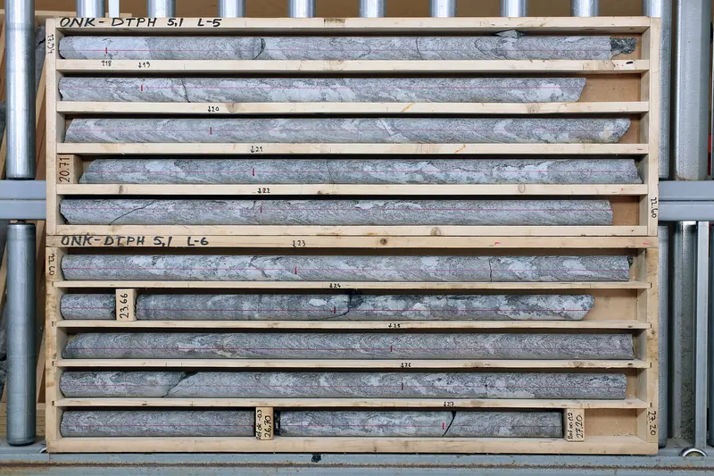

Foto de referenciaEstudios geotécnicos y de suelos
Antes de diseñar una estructura hay que saber sobre qué se apoya. El estudio caracteriza el subsuelo del lote para que el diseñador estructural y el constructor trabajen con información del terreno real.
- Cuándo se necesita
- Al comprar o desarrollar un lote, antes del diseño estructural o como parte de los documentos de licencia de construcción.
- Qué puede incluir
- Revisión de información existente, visita, plan de exploración, sondeos o apiques, ensayos de laboratorio y análisis.
- Qué recibe
- Un informe con la descripción del perfil del suelo, los resultados de exploración y las recomendaciones geotécnicas para el diseño, según el alcance acordado.